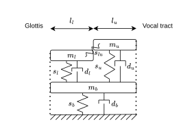
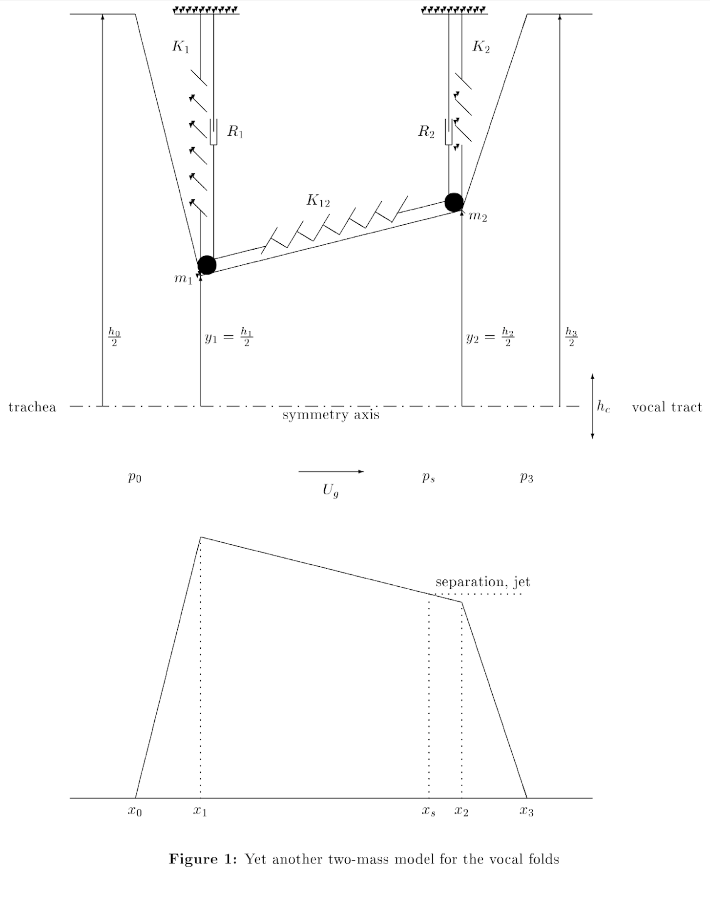

Larynx (vocal folds + flow) models
Models of the larynx include two components and their coupling:
- The vocal folds mechanical model,
- The fluid flow model.
These two components are responsible for self-oscillation, and ultimately of sound production (at least for `voiced' sounds).
The vocal folds are a complex assembly of tissues with various mechanical properties, which can to a certain extent be described by constitutive laws. Their dynamics can therefore be derived from the fundamental laws of mechanics, resulting in three dimensional PDEs models. From these, discretization can be made using high-fidelity methods like the finite element method, or using lumped parameter modeling. The two approaches are quite distinct in their objectives and computational complexity. In this work, low dimensional models are used to keep compute time low. As a rule of thumb, the real-time barrier should become a problem for vocal folds models with ~100 degrees of freedom with the current simulation method and code. The low dimensional models are known to be able to reproduce several qualitative properties of voice production. Large-scale parameter studies are also easier to perform than with larger models, due to the reduced computational cost. However, one needs to be extra cautious when interpreting simulation results as validation is generally hard, especially when comparing with in-vivo data.
Fluid flow between the vocal folds is also complex to represent accurately due to the time-varying domain and to the presence of turbulences. In this work, the classical reduced-order way of representing the glottal flow is used. It consists in a one-dimensional model, assuming incompressible, quasi-stationary flow that separates from the folds to form a jet at the exit of the larynx.
General model class
Vocal folds
The dynamics are assumed to be written in terms of a state \(\boldsymbol x_{\rm f} = [\boldsymbol p_{\rm f}, \boldsymbol q_{\rm f}]^\intercal\), including vectors of generalized coordinates \(\boldsymbol q_{\rm f}\) and momenta \(\boldsymbol p_{\rm f}\). The Hamiltonian (total energy) writes as a function of the state
with diagonal mass matrix \(\boldsymbol M\), and symmetric stiffness matrix \(\boldsymbol K\), both assumed positive definite. The potential energy \(V(\boldsymbol q_{\rm f})\) is the sum of a quadratic term and of a general positive function of the generalized coordinates \(E_{\rm nl}(\boldsymbol q_{\rm f})\), with \(E_{\rm nl}(\boldsymbol 0) = 0\).
The vocal folds dynamics, including dissipation, evolve according to
where \(\boldsymbol u = \pm \boldsymbol{F}_{\rm f}\) is an external forcing and the associated output \(\boldsymbol y = \pm -\boldsymbol{v}_{\rm f}\) is the velocity corresponding to generalized momentum \(\boldsymbol p_{\rm f}\).
Sign of input-output pair
Inputs and output signs depend on the chosen convention for the vocal folds displacement. For the model to be coherent, positive forces must open the glottis. With the above sign convention, this means that: if higher values of q_f result in bigger opening, then a plus must replace the above plus/minus signs, else, a minus must replace the above plus/minus signs. This propagates in the construction of the assembled model below.By construction of the flow \(\boldsymbol f\) and power-conjugated effort \(\boldsymbol e\) vectors, one gets the power balance, using the chain rule and \eqref{eq:dynamics_vf}:
In the absence of an input (\(\boldsymbol u = 0\)), the energy is preserved (for \(\boldsymbol R_0 = \boldsymbol R_{\rm uu} = 0\)) or decreases owing to dissipation.
Glottal flow
The flow description is composed of two equations. The first relates the pressure drop \(\Delta P = P_{-} - P_{+}\) (where \(P_-\) is the sub-glottal pressure and \(P_+\) the supra-glottal pressure) to a resulting mean flow \(Q_{\rm g}\) in the glottis
where \(A_{\rm flow} (\boldsymbol q_{\rm f})\) is the effective open area for the flow.
Form of the glottal flow law
The glottal flow law is derived from the incompressible and stationary assumptions. Up to the jet separation point $x_s$, this leads to a classical Bernoulli type flow : $$ \begin{equation*} \frac{P_{ \rm sub}}{\rho_0} + \frac{1}{2} v_{ \rm sub}^2 = \frac{P_{\rm s}}{\rho_0} + \frac{1}{2} v_{\rm s}^2. \end{equation*} $$ At the separation point, the kinetic energy is assumed to be partly or fully dissipated such that $$ \frac{P_{\rm s}}{\rho_0} + \frac{1}{2} \gamma_r v_{\rm s}^2 = \frac{P_{sup}}{\rho_0} + \frac{1}{2} v_{sup}^2, $$ where $$ 0 \leq \gamma_r \leq 1, $$ is a pressure recovery coefficient. Incompressibility leads to a constant flow $Q_g$ through the glottis, hence $$ Q_g = A_{\rm s} v_{\rm s} = A_{\rm sup} v_{\rm sup} = A_{\rm sub} v_{\rm sub}, $$ under the hypothesis that the flow has reattached to the tissues at $$ x = x_{sup}. $$ Combining the previous equations, and assuming $$ A_{\rm s} \ll A_{ \rm sub} \quad \text{ and } \quad A_{\rm s} \ll A_{sup}, $$ one gets $$ \begin{equation} Q_{\rm g} = A_{\rm s} {\rm sign}(\Delta P) \sqrt{\frac{2 \vert \Delta P\vert}{(1 - \gamma_r)\rho_0} }, \label{eq:Bernoulli_vf_recovery} \end{equation} $$ which is of the form of \eqref{eq:Bernoulli_vf} with $$ A_{\rm flow} = A_{\rm s} \sqrt{\frac{1}{1 - \gamma_r}}. $$The second equation describes the forces applied by the fluid pressure to the vocal folds. These forces can be written as linear combinations of the sub-glottal and supra-glottal pressures:
where \({\boldsymbol S}_{\rm f-} (\boldsymbol q_{\rm f})\) and \({\boldsymbol S}_{\rm f+} (\boldsymbol q_{\rm f})\) are vectors of effective surfaces depending on the current geometry of the glottis.
In most lumped models of the literature, the flow pumped by the vocal folds displacement is not included, as it is mostly negligible in front of the mean flow \(Q_g\) in the glottis owing to the low range of oscillation frequencies. However, this choice results in non-power preserving and non-mass preserving models. Hence, it is not directly compatible with the port-Hamiltonian framework. In this work, we propose to minimally modify the model to include power conjugated flows induced by the vocal fold velocity vector \(\boldsymbol v_{\rm f} = \boldsymbol M_{\rm f}^{-1} \boldsymbol p_{\rm f}\) as
with outgoing lower and upper flows \(Q_{-}, Q_{+}\). This writing effectively restores both the mass and power balances of the model.
The flow component may be written in a compact form as
with
Note that the previous system has the vocal fold configuration \(\boldsymbol q_{\rm f}\) as a parameter, making in non-autonomous. When connecting to the vocal fold model (see next section) \(\boldsymbol q_{\rm f}\) is recovered as a state of the assembly, therefore closing the system. The first presentation as two separated sub-systems
Assembly
Assembly of the vocal folds and fluid flow models is done through the power ports by imposing forces and velocities equalities (\(\boldsymbol{F}_{\rm f} = \boldsymbol{F}_{\rm f}\) and \(\boldsymbol{v}_{\rm f} = \boldsymbol{v}_{\rm f}\)). The assembled system then writes
with
both being functions of the state.
In the previous construction, the flow model can be viewed as a dissipative transformer between fluid flow/pressure and vocal folds velocity/force.
Example models
Body-cover (Story et Titze 19951)
The body-cover model is a three mass model depicted in the following schematic.

Vocal folds
The model can be fitted to the structure in \eqref{eq:dynamics_vf} quite easily, at least for the linear part of it. The state is composed of the displacements \(\boldsymbol q_{\rm f} = [q_l, q_u, q_b]^\intercal\) around the rest positions and momenta \(\boldsymbol p_{\rm f} = [p_l, p_u, p_b]^\intercal\) of the three masses. In the code, the convention is that higher displacement values corresponds to lower glottis opening (see remark above for implications on signs). The diagonal mass matrix writes
From the three d.o.f.s, the four spring elongations \(\boldsymbol e = [e_l, e_u, e_b, e_{lu}]\) can be recovered as
The stiffness matrix then writes
which is by construction semi-positive definite under the condition that all stiffness parameters are positive. Similarly, the dissipation matrix may be built as
$$ \boldsymbol{R_0} = \boldsymbol{W}^\intercal \begin{bmatrix} r_l & 0 & 0 & 0 \\ 0 & r_u & 0 & 0 \\ 0 & 0 & r_b & 0\\ 0 & 0 & 0 & r_{lu} \end{bmatrix} \boldsymbol{W} $$ Note however than in the original model, and in this implementation, \(r_{lu}\) is set to zero.
State dependent dissipation matrix
The mechanical dissipation matrix is in fact state dependent, in a switching manner, as it should increase at contact. In the current state of the code, this is accounted for in a non power preserving manner at the discrete time level. In view of the relatively low values of the vocal fold model eigenvalue, this has no impact on stability. However, for bigger models, this may not be the case. The scheme can be slightly modified to allow for the dissipation matrix to be the sum of a fixed arbitrary part and of a state-dependent diagonal part, without reducing the computational efficiency. We used a similar trick for string simulations in Risse et. al 2025[^risse2025power].With the above elements, the linear part of the vocal folds dynamics is fully described. In addition to that, \(E_{\rm nl}(\boldsymbol q_{\rm f})\) encodes the mechanical nonlinearity. For a pair of vocal folds, this nonlinearity includes two elements:
- A cubic spring nonlinearity, which derives from a function of the elongations $$ E_{\rm material}(\boldsymbol e(\boldsymbol q_{\rm f})) = \frac{1}{4} [k_l, k_u, k_b, k_{lu}]^\intercal \left(\left(\frac{\boldsymbol e}{e_{\rm ref}}\right)^2 \odot \boldsymbol e^2 \right), $$ where \(e_{\rm ref}\) is a reference elongations such that the effective stiffness of the system is 4 times higher than around the rest position for \(e = e_{\rm ref}\).
- A contact nonlinearity, consisting of an asymmetric power law, active only for interpenetrating vocal folds. Considering \(\boldsymbol q_{c}(\boldsymbol{q}_{\rm f})\) to be a measure of the vocal fold interpenetration, the contact restoring force writes $$ E_{\rm c}(\boldsymbol q_{c}(\boldsymbol{q}_{\rm f})) = \frac{1}{\alpha_c + 1} k_c q_c^{\alpha_c} * (q_c > 0). $$ Note that for a pair of non-symmetric vocal folds, \(\boldsymbol q_{c}\) is a function of the concatenated state of both vocal folds.
Glottal flow
From the proposed general parametrization, expressions of \(A_{\rm flow}(\boldsymbol q_{\rm f})\), \({\boldsymbol S}_{\rm f-} (\boldsymbol q_{\rm f})\) and \({\boldsymbol S}_{\rm f+} (\boldsymbol q_{\rm f})\) are needed to complete the model.
In Story et Titze 19951 \(A_{\rm flow}(\boldsymbol q_{\rm f})\) is simply recovered as the minimum between \(A_l\) and \(A_u\) the areas between the lower and upper masses respectively.
The effective surfaces are obtained by a rewriting of equations 21-23 of Story et Titze 19951. Their expression depend on the current glottis configuration. If the glottis is converging (\(A_l > A_u\)), then
if the glottis is diverging (\(A_l < A_u\)) then
for vocal fold half-length and vertical thickness \(L_0\) and \(l_0\). With these elements, the larynx model is fully described.
A symmetrical two mass model (Lous et. al 19982)
Lous's model is a two mass model with piecewise linear geometry depicted in the following schematic directly copied from the paper2.

Vocal folds
The state is composed of the displacements \(\boldsymbol q_{\rm f} = [q_l, q_u]^\intercal\) around the rest positions and momenta \(\boldsymbol p_{\rm f} = [p_l, p_u]^\intercal\) of the two masses. In the code, the convention is that higher displacement values corresponds to lower glottis opening (see remark above for implications on signs). The diagonal mass matrix writes
From the two d.o.f.s, the three spring elongations \(\boldsymbol e = [e_l, e_u,e_{lu}]\) can be recovered as
The stiffness matrix then writes
which is by construction semi-positive definite under the condition that all stiffness parameters are positive. Similarly, the dissipation matrix may be built as
TO finish the mechanical model, nonlinearities can be added in the same way than for the body-cover model described above.
Glottal flow
The glottal flow law is obtained through a rewriting of equation 2 of the paper:
which is indeed in the form of \eqref{eq:Bernoulli_vf}. \(x_s\) denotes the estimated jet separation point. As the kinetic energy of the jet is assumed to be fully dissipated, zero pressure recovery is considered above the separation point, hence \(\left(P_{sub}(t) - P(x_s, t)\right) = \left(P_{sub}(t) - P_{sup}( t)\right) = \Delta P\) in the third line. Note that \(A_{\rm flow}\) may diverge for finite values of \(h(x_s, t)\) if \(h(x_s, t) = 0\). This should ideally not happen as it would be unphysical. However, in a real-time safe context, a solution is to further assume \(\frac{h^2(x_s, t)}{h_0^2} \approx 0\). If this assumption is made, then the glottal flow equation reduces to a similar expression as for the body-cover model.
In the paper, the jet separation point is evaluated such that \(h(x_s) = s h_1\) or as \(x_s = x_2\) if \(h_2 \textcolor{red}{>} s h_1\). \(s\) is referred to as the separation constant. The condition seems to be backward, such that in the code it is implemented with \(h_2 \textcolor{red}{<} s h_1\) as the condition.
The effective forces applied to the fold by the fluid are harder to get to. Following notations from the paper, the effective force on the lower mass writes:
and on the upper mass:
To solve the integrals, the explicit expression of \(p(x)\) is needed. In the paper, this expression is given as a function of two quantities \(P_0\) and \(P_1\) which despite notations are not pressures at point 0 and 1. Between \(x_0\) and \(x_s\), one gets
where in the last line, \(A\) and \(B\) correspond to terms \(P_0\) and \(P_1\) from the paper. In order to fit the general model proposed at the top of this page, the forces must be written as linear functions of \(P_{sub}\) and \(P_{sup}\):
Above \(x_s\), the pressure is equal to the supra-glottal pressure
As a last step to fully determine the integrals, \(h(x)\) needs to be replaced by its piecewise linear expression:
Note that \(H_{1, i}\) and \(H_{2, i}\) are defined piecewise. The paper gives two useful identities to compute the integrals
Explicit forces can then be written as
Noise model
In the glottis, the flow law is based on the assumption of Bernoulli flow up to a separation point after which part or all of the kinetic energy is dissipated.
In order to introduce a power-balanced noise generator at the larynx output, we propose to modify the glottal flow law as
with
a random variable sampled in a chosen distribution assumed to be bounded, and \(\kappa_N \geq 0\) a noise ratio coefficient. This additional noise can be interpreted as a random positive variation of \(\gamma_r\), the pressure recovery coefficient in \eqref{eq:Bernoulli_vf_recovery}. With this chosen parametrization, the system is ensured to be dissipative.
As a first try of this method, the distribution is chosen to produce a pink noise. Later experiments should be based on optimized noise generator depending on the instantaneous geometry configuration, either based on higher order simulation results, or on measurements.
-
Brad H Story and Ingo R Titze. Voice simulation with a body-cover model of the vocal folds. The Journal of the Acoustical Society of America, 97(2):1249–1260, 1995. ↩↩↩
-
NJC Lous, GCJ Hofmans, RNJ Veldhuis, and A Hirschberg. A symmetrical two-mass vocal-fold model coupled to vocal tract and trachea, with application to prosthesis design. Acustica, 84(6):1135–1150, 1998. ↩↩
-
Thomas Risse, Thomas Helie, and Stefan Bilbao. Power-balanced drift regulation for scalar auxiliary variable methods: application to real-time simulation of nonlinear string vibrations. In 28th International Conference on Digital Audio Effects, 126–133. DAFx, 2025. ↩